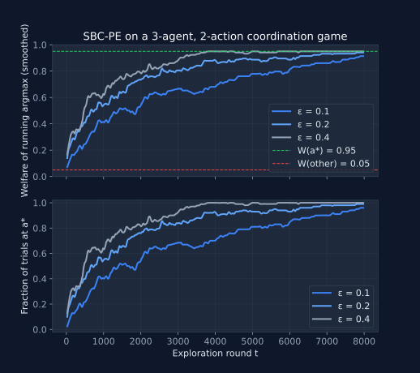

One Bit to Coordinate Them All: How SBC-PE Achieves Exact Pareto Optimality in Multi-Agent Games
In multi-agent reinforcement learning (MARL), the dream is simple yet extremely hard: get autonomous agents to jointly maximize social welfare while barely talking to each other. Most payoff-based rules get you somewhere near efficient outcomes with zero communication, but they come with asymptotic hand-waving and no finite-time guarantees. Communication-heavy methods deliver stronger results at the cost of bandwidth that real-world systems , sensor networks, robot swarms, spectrum sharing, and even LLMs , simply cannot afford.
What if one bit per agent per round was enough to reach the exact socially optimal joint action, with provable logarithmic regret?
The new paper “Achieving Pareto Optimality in Games via Single-bit Feedback” [1] introduces Single-Bit Coordination Dynamics for Pareto-Efficient Outcomes (SBC-PE) and delivers exactly that.
One bit is enough for exact global coordination
The headline result feels almost magical: agents broadcast a single satisfaction bit $m_i^t \in \{0,1\}$ each round and still converge to the unique welfare-maximizing joint action $a^*$.
During an exploration phase of length $K$, every agent $i$ samples $a_i^t \sim \text{Uniform}(A_i)$, observes its local utility $u_i(a^t)$, and constructs its bit as
$$m_i^t = \begin{cases} 1 & \text{w.p. } \varepsilon^{\,1 - w_i u_i^t} \text{ if } u_i^t > \lambda_i \\ 0 & \text{otherwise} \end{cases}$$
(Equation 3 in [1]). Each agent only increments its local counter $c_i(a_i)$ for the action it just played if every agent broadcasts 1 that round.
After exploration, each agent greedily picks $\bar a_i = \arg\max_{a_i} c_i(a_i)$ and commits forever.
Why this is surprising. No agent ever sees another’s action or payoff. Yet the collective “all-satisfied” signal encodes enough global information to identify the optimum. The authors prove that the probability all agents endorse a feasible joint action $a$ is exactly
$$P(m^t = \mathbf{1} \mid a^t = a) = \varepsilon^{\,n - W(a)}$$
for $a \in A_\lambda$ (and zero otherwise), where $W(a) = \sum_i w_i u_i(a)$ is the weighted social welfare (Equation 8 in [1]). This turns uniform random exploration into a biased sampler that overwhelmingly favors high-welfare profiles.
The probabilistic softmax trick that makes the math work
The real elegance lies in how the endorsement probabilities reshape the sampling distribution. Define
$$\theta(a) \;:=\; P(a^t = a, \, m^t = \mathbf{1}) \;=\; \frac{\varepsilon^{\,n - W(a)}}{|A|}$$
for feasible $a$. Under the mild assumption $\varepsilon < 1$, the mode of $\theta$ is precisely the welfare maximizer $a^*$.
The authors then show a clean separation lemma (Lemma 1 in [1]): for a sufficiently small $\varepsilon$ controlled by the welfare gap $\Delta_1 = W(a^*) - \max_{a \neq a^*} W(a)$,
$$\theta(a^*) - \xi \;>\; \sum_{a \neq a^*} \big(\theta(a) + \xi\big),$$
with $\xi$ an explicit function of $\delta$, $M = |A_\lambda|$, and $\varepsilon$. This separation guarantees that the empirical marginal counters $\hat{\theta}_i(\tilde a_i)$ correctly identify each agent’s component of the optimum (Proposition 1) once estimation error drops below $\xi$.
Reflection. This is the kind of “one weird trick” that makes theorists smile. By exponentiating the welfare in the endorsement probability, the algorithm effectively runs a softmax over joint actions , without anyone ever computing it centrally.
Logarithmic regret in finite time (goodbye, asymptotics)
Prior payoff-based rules [2, 3] could only claim stochastic stability at Pareto-efficient points. SBC-PE gives explicit finite-time guarantees.
Using Hoeffding’s inequality on the unbiased estimators $\hat{\theta}^K(a)$, the authors set
$$K \;=\; \frac{\log(4 M T \xi^2)}{2\xi^2}$$
so that with high probability every $|\hat{\theta}^K(a) - \theta(a)| \leq \xi$. The expected cumulative regret is then bounded by
$$\mathbb{E}[R_T] \;<\; \frac{\Delta}{2\xi^2}\Bigl(1 + \log(4 M T \xi^2)\Bigr)\Bigl(1 - \frac{1}{2 T \xi^2}\Bigr)$$
(Theorem 1 in [1]), which is $O(\log T)$.
Why this matters for MARL practitioners. You no longer have to wait “long enough” and hope. With a calculable (if parameter-dependent) exploration budget, you get the exact optimum with overwhelming probability and provably vanishing per-step regret.
Extreme generality: arbitrary finite games, no special structure required
SBC-PE needs none of the usual suspects , no potential games, no identical interests, no Lipschitz continuity, no continuous action spaces. It works for any finite game with weighted welfare and local threshold constraints $u_i(a) > \lambda_i \;\forall i$.
The only non-trivial assumptions are:
- Unique welfare maximizer (Assumption 1-ii in [1]),
- Bounded scaled utilities $w_i u_i(a) < 1$,
- $\varepsilon$ small enough relative to the welfare gap $\Delta_1$ and $|A_\lambda|$.
Counter-intuitive insight. The algorithm is agnostic to game structure yet still extracts the global optimum from purely local observations plus one collective bit. That universality is rare in coordination literature.
From equations to code: SBC-PE in practice
The exploration loop is short enough to fit on a single screen. Each agent maintains a per-action counter and a one-line endorsement rule; the joint counters advance only when every agent broadcasts a 1.
@dataclass
class Agent:
n_actions: int
epsilon: float
weight: float
threshold: float
counter: np.ndarray = field(init=False)
rng: random.Random = field(default_factory=random.Random)
def __post_init__(self):
self.counter = np.zeros(self.n_actions, dtype=np.int64)
def play(self):
return self.rng.randrange(self.n_actions)
def endorse(self, utility_value):
# Single-bit endorsement m_i^t (Equation 3).
if utility_value <= self.threshold:
return 0
accept_prob = self.epsilon ** (1.0 - self.weight * utility_value)
return 1 if self.rng.random() < accept_prob else 0
def increment(self, action):
self.counter[action] += 1
def commit(self):
return int(np.argmax(self.counter))
def run_step(agents):
actions = [a.play() for a in agents]
u = utility(actions)
bits = [agents[i].endorse(u[i]) for i in range(len(agents))]
if all(bits): # the AND gate of Figure 1
for i, a in enumerate(agents):
a.increment(actions[i])
That is the entire learning rule. No gradients, no observations of other agents, no benchmark machinery. To reproduce the simulation, instantiate one Agent per player, define the joint utility function, and iterate. The full runner that produced Figure 2 below , a hand-tuned 3-agent, 2-action coordination game where $a^* = (1,1,1)$ pays 0.95 to every player and every other profile pays 0.05 , is in sbc_pe.py.

The (necessary) price of admission: communication and tuning
Here’s where the paper gets refreshingly honest. SBC-PE still requires communication , one bit per agent per round during exploration, broadcast to everyone. Zero-communication payoff-based rules exist, but they lack the finite-time guarantees and exact convergence that SBC-PE delivers.
Other limitations that deserve attention:
- The exploration length $K$ scales with $\log(MT)/\xi^2$, and $\xi$ itself depends on the (unknown) welfare gap $\Delta_1$. In practice you must guess or over-estimate.
- Unique maximizer is crucial; multiple optima break the separation argument (Remark 2 in [1]).
- Post-commitment is irrevocable , no adaptation if the environment changes.
- The paper’s own simulations ($n=10$ agents, binary actions) show that too-large $\varepsilon$ collapses performance while too-small $\varepsilon$ wastes exploration steps.
In short, single-bit feedback is astonishingly powerful, but it is not free. The algorithm trades communication for provable exactness.
Why this changes the conversation in MARL
SBC-PE sits in a sweet spot that previous work missed: minimal signaling + general applicability + explicit regret bounds. It proves that scalable welfare optimization is possible even when bandwidth is measured in bits, not packets.
Final thought
As we push MARL toward real-world deployment under ever-tighter resource constraints, the question is no longer “Can we coordinate with almost no communication?” but “How do we make single-bit (or even sub-bit) protocols robust to non-stationarity, continuous actions, and partial observability?” SBC-PE gives us the proof-of-concept. The next breakthroughs will almost certainly build on its elegant foundation.
References
- Kiremitci, Y., Donmez, A., & Sayin, M. O. (2025). Achieving Pareto Optimality in Games via Single-bit Feedback. arXiv:2509.25921v2.
- Marden, J. R., Young, H. P., & Pao, L. Y. (2014). Achieving Pareto Optimality Through Distributed Learning. SIAM Journal on Control and Optimization, 52(5), 2753–2770.
- Pradelski, B. S. R., & Young, H. P. (2012). Learning efficient Nash equilibria in distributed systems. Games and Economic Behavior, 75(2), 882–897.